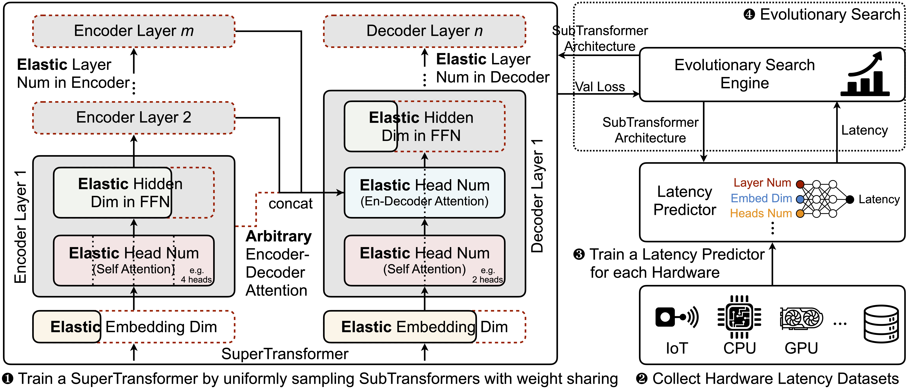

Transformers are ubiquitous in Natural Language Processing (NLP) tasks, but they are difficult to be deployed on hardware due to the intensive computation. To enable low-latency inference on resource-constrained hardware platforms, we propose to design Hardware-Aware Transformers (HAT) with neural architecture search. We first construct a large design space with arbitrary encoder-decoder attention and heterogeneous layers. Then we train a SuperTransformer that covers all candidates in the design space, and efficiently produces many SubTransformers with weight sharing. Finally, we perform an evolutionary search with a hardware latency constraint to find a specialized SubTransformer dedicated to run fast on the target hardware. Extensive experiments on four machine translation tasks demonstrate that HAT can discover efficient models for different hardware (CPU, GPU, IoT device). When running WMT’14 translation task on Raspberry Pi-4, HAT can achieve 3× speedup, 3.7× smaller size over baseline Transformer; 2.7× speedup, 3.6× smaller size over Evolved Transformer with 12,041× less search cost and no performance loss.

Results on WMT 14' En-De and En-Fr translation tasks

Citation
@inproceedings{wang2020hat,
title = {HAT: Hardware-Aware Transformers for Efficient Natural Language Processing},
author = {Wang, Hanrui and Wu, Zhanghao and Liu, Zhijian and Cai, Han and Zhu, Ligeng and Gan, Chuang and Han, Song},
booktitle = {Annual Conference of the Association for Computational Linguistics},
year = {2020}
}
Acknowledgments: We sincerely thank NSF Career Award #1943349, MIT-IBM Watson AI Lab, Semi-conductor Research Corporation (SRC), Intel, and Facebook for supporting this research.